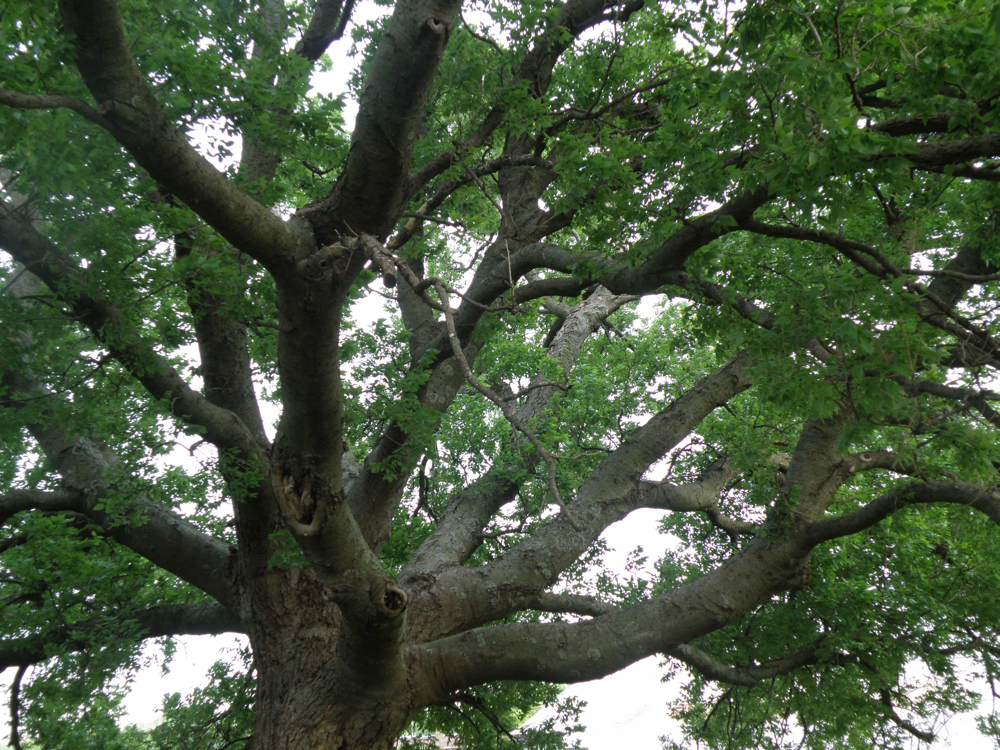

Be it the resilient willow or the impressive cedar, trees have inspired humans for millennia, as the symbol of strength, longevity, and rebirth. Nowadays, men look only towards their peers for guidance, but the answer might just be in one’s own garden.
Roots
They represent the connection with one’s home and those who came before. The seed that took root did not materialise out of thin air. Parents and forefathers crafted it and the fertile soil made it grow.
Be thankful for the land that was not barren and that you can proudly call home. Honour it with a strong foundation and it will help you withstand storms and build a future.
Heavy roots hold the tree in the ground while rootlets draw water and sustenance. The more connection with the myriad of distant roots, the more solid the base and the more water will be found.
The tough, unmovable stump will remain long after a tree’s death and might even live on. One does not see roots but knows they must be powerful and deep to support a mighty tree.
Trunk

Your body must evolve like an oak trunk. Tend to it daily and it shall be sturdy and ready to handle the changing seasons. Despite a slow growth, regularity, dedication and respect allow it to be even and well-shaped. Proper nourishment will fortify it to endure ailments, axes, and fate.
A rough bark over burly wood can be stronger than stone. The bitter winter frost or the scorching summer heat are no match, for time and patience are on the tree’s side. But the tree, like man, knows humility for one day, time, who was once an ally, will become a foe.
The trunk is the most awe-inspiring part of a tree as humans can touch it, but they will also judge it.
Branches

A man’s intelligence, education, and skills should be as stable and organised as the branches of a tree. Dreams, aspirations and mastery support the thought process, like thick living limbs that split into numerous, smaller branches.
Rather than a multitude of frail twigs that get tangled up with others or snap under the weight of snow or the raging wind, fewer solid branches prevail. Just like more time spent honing essential skills triumphs over being a “jack of all trades, master of none.”
Travellers marvel at the trunk of the tree and its leaves but do not see the time his branches took to grow and the complex organisation that supports the whole frame.
Leaves
They are the ideas, creations and accomplishments. Leaves create breathable air for others and soothe the soul with their dance in the wind. Bards and artists find inspiration when they witness their rich, changing colours.
They are aesthetic, but before all, useful. They must be numerous, healthy and even. Leaves follow a cycle and are rarely at their peak all year round. They are the most visible element of the tree so the first target for parasites and insects.
Leaves will drift away when their time comes. Even wrinkled and scattered, they carry the tree’s legacy far and they shall feed animals and plants, helping them grow. Even in death, the world benefits from their existence.
About the sun

Success, status, luck, gold, women… men need them, like trees need sunlight. A steady amount of it will help but too much or too little of these joys will harm the tree.
A tree can grow with artificial light but will remain weak. Like a man expecting praise for average work, victimhood or choosing obscene imagery over real flesh and relationships.
Concerning the wind
Wind is to the tree what friends are to man. The gentle and useful wind carries dead leaves away and lets the pollen travel to other fertile rees, that will bear fruits and complete the eternal cycle.
Better a reliable, steady wind than violent and conflicting winds that will bend and even uproot the tree, or a weak wind that is rarely noticed.
Les arbres survivront aux hommes

All the sections described form a complex and balanced osmosis, where the death of one means the death of the others.
Trees do not wonder if the world likes their trunk or leaves. They grow for their own sake. The rest is a bonus.
Great men and colossal trees must learn to be humble for all things, however strong, shall die.
Read More: Eating From The Tree Of Wisdom